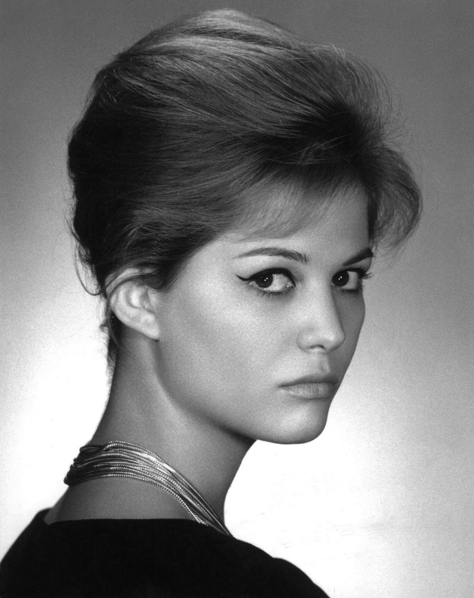
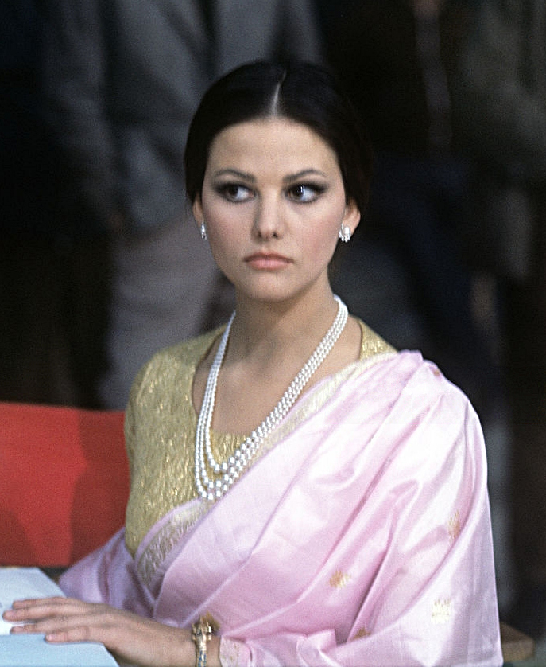
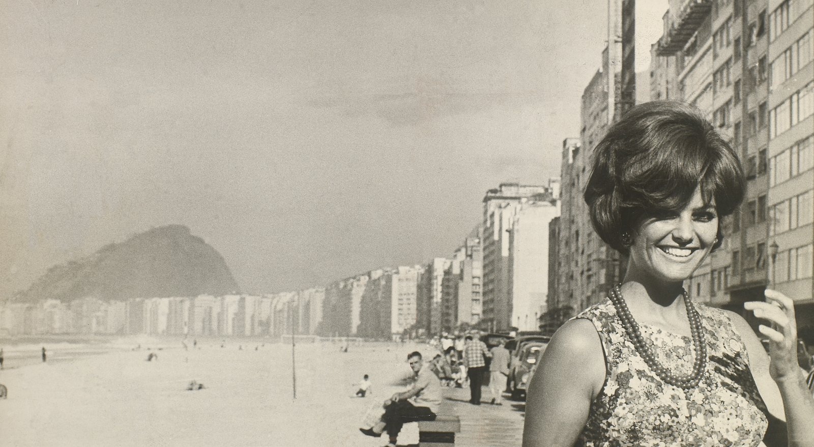
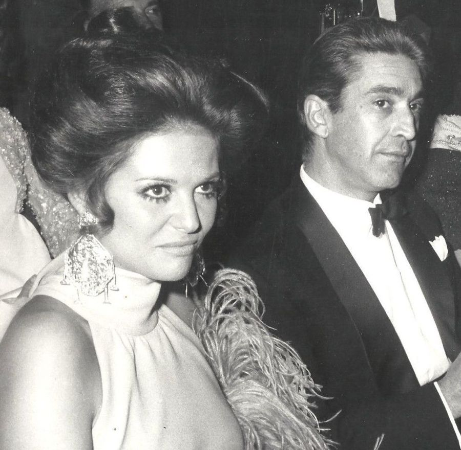
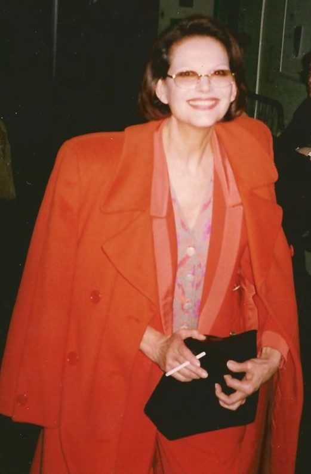
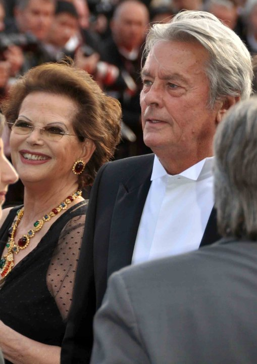

Claudia Cardinale Biography: Age, Movies, Awards, Net Worth and Family
She was called the most beautiful woman in the world in the 1960s — and she spent the next sixty years proving she was much more than that. Claudia Cardinale, born in Tunisia and raised speaking French and Arabic, became one of the great faces of Italian cinema: the village girl of The Leopard, the actress of Fellini’s 8½, Princess Dala in The Pink Panther and Jill McBain in Once Upon a Time in the West. She made more than 175 films, refused Hollywood’s star system, won the Career Golden Lion at Venice and the Honorary Golden Bear at Berlin, and worked until she was in her eighties. She died on 23 September 2025, aged 87, one of the last surviving stars of the Golden Age of European cinema. She is the fifth Italian celebrity on Stars of Europe, after Monica Bellucci, Sophia Loren, Roberto Benigni and Marcello Mastroianni — her co-star in 8½ and in three other films, and the man who fell in love with her on the set of Il bell’Antonio.

Key takeaways
- Born 15 April 1938 in La Goulette, Tunisia; died 23 September 2025 in Nemours, France, aged 87; her career ran from 1957 to 2022 and covered more than 175 films.
- She won the “Most Beautiful Italian Girl in Tunisia” contest in 1957, which took her to the Venice Film Festival and a seven-year contract with the producer Franco Cristaldi; her feature debut was Goha (1958) with Omar Sharif.
- 1963 was her greatest year — The Leopard, Fellini’s 8½, The Pink Panther and Bebo’s Girl, for which she won her first Nastro d’Argento for Best Actress.
- She turned down Hollywood’s star system, refusing an exclusive contract with Universal Studios and returning to Europe, even at the cost of money and fame.
- Her best-known role is Jill McBain in Sergio Leone’s Once Upon a Time in the West (1968); she won the David di Donatello for Best Actress twice, for The Day of the Owl (1968) and A Girl in Australia (1971).
- She received the Career Golden Lion at Venice in 1993 and the Honorary Golden Bear at Berlin in 2002, and was a UNESCO goodwill ambassador for the Defence of Women’s Rights from March 2000.
- No childhood photograph of her exists on Wikimedia Commons — the earliest free-licence photograph found is the 1960 studio portrait at the top of this article — and no reliable net-worth figure exists, so none is given.
Who Is Claudia Cardinale?
| Full name | Claude Joséphine Rose Cardinale |
|---|---|
| Date of birth | 15 April 1938 |
| Date of death | 23 September 2025 (aged 87) |
| Birthplace | La Goulette, French Tunisia |
| Nationality | Italian |
| Profession | Actress |
| Years active | 1957–2022 |
| Spouse | Franco Cristaldi (married 1966–1975) |
| Partner | Pasquale Squitieri (1975–2017) |
| Children | Patrick, Claudia |
| Net worth | Not stated — no reliable estimate found |
Claudia Cardinale is regarded as one of the leading female figures of Italian cinema, alongside Sophia Loren, Monica Vitti, Silvana Mangano, Anna Magnani and Gina Lollobrigida. In a career spanning more than six decades she appeared in more than 175 films, mostly in Italy and France, across comedy, drama, spaghetti westerns and historical epics, working with Federico Fellini, Sergio Leone, Luchino Visconti and Werner Herzog. Several of her films are now regarded as significant works in the history of cinema, and at the time of her death she was one of the last surviving stars from the Golden Age of European cinema.
Her story is unlike the other Italian stars on this site. She was not born in Italy at all, but in a port town near Tunis, and she grew up speaking French and Tunisian Arabic — she did not learn Italian until she was cast in Italian films. She never wanted to be an actress: she wanted to be a teacher. A beauty contest she was pushed into by accident took her to Venice, and a producer’s seven-year contract took her to Rome. She became famous for her beauty, was called a sex symbol of her era, and then spent the rest of her life refusing to be treated as one — turning down Hollywood, keeping her private life separate from her work, and speaking out for women’s rights.
Age and Early Life — A Tunisian Childhood
Claude Joséphine Rose Cardinale was born on 15 April 1938 in La Goulette, a port municipality near Tunis, when Tunisia was under French control. Her father, Francesco Cardinale, was an Italian railway worker of French-Piedmontese and Sardinian-Sicilian origins. Her mother, Yolande Greco, was born in what was then Italian Tripolitania, to Sardinian-Ligurian parents. The family later settled in La Goulette, which had a large Italian community, and Claudia grew up there with her younger sister Blanche, speaking only French and Tunisian Arabic.
She was educated at the Saint-Joseph-de-l’Apparition School of Carthage, which she attended with Blanche, and then at the Paul Cambon School, where she studied with the intention of becoming a teacher. As a teenager she was described as “silent, weird and wild”, and like other young women of her generation she was fascinated by Brigitte Bardot, who had come to prominence in Roger Vadim’s And God Created Woman (1956). Nothing in her childhood suggested a film career: she had her teacher’s certificate and hoped to teach in a Tunisian desert town.
The Beauty Contest That Changed Everything
The turning point came in 1957, during the Italian Cinema Week in Tunis, when Cardinale won a competition for the “Most Beautiful Italian Girl in Tunisia”. The contest was meant to raise money for charity — her mother was on the charity committee — and Cardinale later said she was pushed onto the stage by someone while she was helping with the arrangements, and was declared the winner. The first prize was a trip to the Venice Film Festival, where she was spotted by several film producers and invited to study at the Experimental Cinematography Centre in Rome, under Tina Lattanzi.
She attended briefly and left at the end of her first term. Despite her extremely photogenic looks, she had trouble with her acting assignments, partly because of her difficulties with the Italian language, and she decided to return home — a decision that earned her a cover story in the popular weekly Epoca, astonished that a young woman would turn her back on a career as a film star. But back in Tunis, her life took a difficult turn: she discovered she was pregnant, the result of a relationship with a Frenchman some ten years her senior, which had begun when she was only seventeen and lasted about a year. He wanted her to have an abortion; she decided to keep the child. Her solution was to sign a seven-year exclusive contract with the production company Vides, run by the producer Franco Cristaldi, who largely managed her early career and whom she later married. Cristaldi sent her to London for the birth, far from the press, explaining simply that she had gone to England to learn English for a film. Her son Patrick was kept a secret for seven years, raised by her parents and sister more or less as a brother, until the journalist Enzo Biagi discovered the truth and she told him everything; he published her story in Oggi and L’Europeo. Cristaldi later adopted Patrick.
First Films — Goha, Big Deal on Madonna Street and Rocco
Cardinale’s first film work was a short film made with her classmates by the French director René Vautier, Anneaux d’or, which was presented successfully at the Berlin Film Festival and made her a minor local celebrity. It led to her being spotted by Jacques Baratier, who offered her a small role in Goha (1958), opposite the Egyptian star Omar Sharif. She accepted reluctantly — Baratier explained that he wanted a Tunisian actress rather than an Italian for the main role — but the appearance marked her feature-film debut.
Under the new contract with Cristaldi, she was given a minor role in 1958 alongside Vittorio Gassman, Totò, Marcello Mastroianni and Renato Salvatori in Mario Monicelli’s internationally successful crime comedy Big Deal on Madonna Street (I soliti ignoti), playing Carmelita, a Sicilian girl virtually imprisoned in her home by her overpowering brother. The comedy was a huge success and made Cardinale instantly recognisable; some newspapers were already calling her la fidanzata d’Italia — Italy’s sweetheart. Later that year she had a leading role alongside Yvonne Monlaur in Claudio Gora’s romantic comedy Three Strangers in Rome.
In 1959 she appeared opposite Renato Salvatori in the mafia film Vento del sud, played the wife of Maurizio Arena in Luigi Zampa’s Il magistrato, and starred opposite Pietro Germi in his crime film The Facts of Murder — an important assignment in learning the craft of acting and feeling at ease in front of the camera, which she considered her first real test as an actress. She worked into her seventh month of pregnancy and kept it hidden from her co-workers and the public, at great personal strain.


1963 — The Greatest Year: The Leopard, 8½ and The Pink Panther
In 1960, Cardinale starred opposite Marcello Mastroianni in Mauro Bolognini’s Golden Leopard-winning drama Il bell’Antonio, playing a manipulative woman who leads men to perdition — the start of a fruitful partnership, and of a friendship with Bolognini she counted among the most joyful of her career. During the filming, Mastroianni fell in love with her, but she rejected him: she did not take his love seriously, considering him one of those actors who cannot help falling in love with their co-stars. Mastroianni insisted his feelings were genuine, even many years later, and the genuine feeling between the two actors proved ideal for the tension between their characters. She went on to play Pauline Bonaparte in Abel Gance’s French film Austerlitz, and Ginetta, the fiancée of Spiros Focás, alongside Salvatori and Alain Delon in Luchino Visconti’s critically acclaimed Rocco and His Brothers (1960). In her early Italian roles she was usually dubbed, as producers considered her voice too hoarse and her Italian still accented.
In 1961 she portrayed a sultry nightclub singer and young mother in Valerio Zurlini’s Girl with a Suitcase, a role she took on with unusual feeling: from her own experience of early motherhood, she naturally conveyed the worries of a teenaged mother, and she needed several months to overcome her apprehensions and prepare for the part. Zurlini, she said, “taught me everything, without ever making demands on me”, and critics praised her warmly. Later that year she starred as a prostitute opposite Jean-Paul Belmondo in Bolognini’s The Lovemakers, and both films were presented at the 1961 Cannes Film Festival. She was not yet considered comparable to the two divas of Italian cinema, Sophia Loren and Gina Lollobrigida, but several newspapers and magazines, including Paris Match, began to consider her a credible young rival to Brigitte Bardot. In 1962 she starred opposite Belmondo as Vénus in the adventure Cartouche, which made her a major star in France, and played Angiolina in Bolognini’s Careless.
The finest and most prolific year of her career was 1963, when she appeared in a string of leading productions. She starred alongside Burt Lancaster in Visconti’s The Leopard (Il Gattopardo), portraying Angelica, a village girl who marries a progressive young aristocrat, played by Alain Delon, and she played a film actress cast by a director — Marcello Mastroianni — in Federico Fellini’s 8½. She worked on the two films during exactly the same period, frequently moving from one set to the other, and the contrast could hardly have been greater: Visconti’s set had an almost religious atmosphere, everything focused on the film, with silence demanded for his work, while Fellini preferred noise and confusion and relied almost entirely on improvisation.
Until then, Cardinale’s own voice had never been used in her Italian films, as it was considered too hoarse and, owing to her French accent, insufficiently Italian. Not until 8½ was she allowed to use her own voice. “When I arrived for my first movie, I couldn’t speak a word,” she explained later. “I thought I was on the moon. I couldn’t understand what they were talking about. And I was speaking in French; in fact, I was dubbed. And Federico Fellini was the first one who used my voice. I think I had a very strange voice.” With her portrayal of Angelica in The Leopard and her brief appearance as herself in 8½, she achieved the definitive status of a top-ranking star. The same year she starred as Mara in Bebo’s Girl, for which she received her first Nastro d’Argento for Best Actress in 1965, and she played Princess Dala, a wealthy aristocratic woman who is the love and jewellery interest of David Niven, in Blake Edwards’s The Pink Panther, filmed at Cortina d’Ampezzo. Her voice in that film was dubbed by Gale Garnett, who went uncredited; Niven raved about working with her, telling her, “After spaghetti, you’re Italy’s happiest invention.”
Hollywood Years — and Why She Left
In 1964, Cardinale starred alongside Rod Steiger and Shelley Winters in Francesco Maselli’s Time of Indifference, and then she spent three years in the United States, where she starred in several Hollywood films. It was an American initiative of the time: the studios invited all the successful European actresses to perform in their pictures, hoping to create a monopoly. Many suffered from the experience, but Cardinale held her own. She took care of her own interests, she said, blankly refusing to sign an exclusive contract with Universal Studios and signing only for individual films. “In the end, everything worked out fine for me.”
She first starred in Henry Hathaway’s Hollywood picture Circus World (1964) opposite John Wayne and Rita Hayworth, playing Hayworth’s daughter in a mother-daughter circus act. In 1965 she appeared in Visconti’s Sandra (Vaghe stelle dell’Orsa), playing a Holocaust survivor, and starred opposite Rock Hudson in Universal’s Blindfold, the last film directed by Philip Dunne; she and Hudson became good friends, and he was protective of her, knowing her discomfort outside Italy. While in Hollywood she also became friends with Barbra Streisand, Elliott Gould and Steve McQueen, but she never managed to feel at home there. In 1966 she starred in Mark Robson’s war picture Lost Command opposite Anthony Quinn, Alain Delon and George Segal, and played a Mexican marquessa in Richard Brooks’s western The Professionals, reuniting her on screen with Burt Lancaster in what she considered her best American film. The following year she appeared in A Rose for Everyone and in Alexander Mackendrick’s sex farce Don’t Make Waves, opposite Tony Curtis and Sharon Tate.
By 1966, Cardinale was being cited as the most popular film star in Italy, even more than Mastroianni and Loren. Life magazine wrote that “the Cardinale appeal is a blend of solid simplicity and radiant sensuality”. But following her success in Hollywood, she began to express concerns about the direction of her career. In a July 1966 interview with Life, she confessed her fear of being over-glamourised and exploited, like Sophia Loren, and said that although she had several further American films lined up, “If I have to give up the money, I give it up. I do not want to become a cliché.” By the end of the decade she had returned to making films primarily in Italy, accepting a pay cut and turning her back on Hollywood stardom. “I don’t like the star system. I’m a normal person. I like to live in Europe,” she said. The film writer David Simpson later noted that as a result, “Cardinale never achieved the same level of fame as Loren and Gina Lollobrigida”, although she appeared in a higher number of decent films.
One small footnote from 1966: a photograph of Cardinale was featured in the original gatefold artwork of Bob Dylan’s album Blonde on Blonde, but it was used without her permission and removed from later pressings. In 1967, Cristaldi joined her in the United States, and while the two were staying in Atlanta, he surprised her by taking her to their wedding ceremony, which he had arranged without her knowledge. She went ahead with the ceremony, but was concerned about sacrificing the rights she had to her child Patrick, and realised she was increasingly unable to make decisions about her own life. The marriage was never made official in Italy.

.jpg){kind=link}
Once Upon a Time in the West — Jill McBain
In 1968, Cardinale featured opposite Franco Nero in The Day of the Owl, in a performance that won her the David di Donatello for Best Actress. She reunited with Rock Hudson in the Italian-made crime comedy A Fine Pair, appeared alongside Rod Taylor in The Hell with Heroes, and starred in one of her best-known roles: as the former prostitute Jill McBain in Sergio Leone’s epic western Once Upon a Time in the West. Such was the power of her performance that Leone’s biographer Robert C. Cumbow described her as “permanently engraved in cinematic history”, noting how her sex-goddess appearance combined with her more mystical associations to ease Jill’s progress “from tart to town builder, from harlot to earth mother, from sinner to symbol of America — the apotheosis of the harlot with a heart of gold”. In 1969 she starred opposite Nino Manfredi in Luigi Magni’s The Conspirators, based on the true story of the execution of two carbonari in papal Rome, played a telephone operator in Diary of a Telephone Operator, and played a nurse opposite Sean Connery and Peter Finch in Mikhail Kalatozov’s The Red Tent, based on the mission to rescue Umberto Nobile and the survivors of the crash of the airship Italia.
The 1970s and 1980s — Squitieri, Fitzcarraldo and Claretta
In 1970, Cardinale starred opposite Peter McEnery and Eli Wallach in Jerzy Skolimowski’s comedy The Adventures of Gerard. In 1971 she formed a duo with Brigitte Bardot in the French western-comedy The Legend of Frenchie King, and appeared as a prostitute opposite Alberto Sordi in Luigi Zampa’s comedy A Girl in Australia, shot on location in February and March 1971, which earned her a second David di Donatello for Best Actress the following year. In 1972 she appeared in Marco Ferreri’s The Audience and in La Scoumoune with Jean-Paul Belmondo, and in 1973 she played a Russian aristocrat opposite Oliver Reed in One Russian Summer, set in pre-revolutionary Russia. In 1974 she starred opposite Franco Nero in Blood Brothers, a historical drama with noir elements, and on that set she met the director Pasquale Squitieri for the first time; he soon became her partner, and they would be together until his death in 2017.


In 1975 she played the daughter of a political exile in Mauro Bolognini’s Libera, My Love, and appeared in the comedies The Immortal Bachelor with Vittorio Gassman and Blonde in Black Leather with Monica Vitti. In 1976 she appeared in the sex comedy A Common Sense of Modesty, directed by and co-starring Alberto Sordi. The following year she had a biblical role as the adulteress in the miniseries Jesus of Nazareth, and starred in Squitieri’s I Am the Law, about the prefect Cesare Mori, known as the “Iron Prefect”. In 1978 she appeared in Damiano Damiani’s political thriller Goodbye & Amen and again alongside Giuliano Gemma in Squitieri’s gangster picture Father of the Godfathers, set in 1950s Sicily. In 1979 she played Eleana, a Greek brothel madame and the girlfriend of Telly Savalas, in George P. Cosmatos’s adventure war film Escape to Athena.
After a role in Si salvi chi vuole (1980) and a smaller part in Peter Zinner’s The Salamander, Cardinale played the love interest of Marcello Mastroianni in Liliana Cavani’s war picture The Skin (1981), a film which also reunited her with Burt Lancaster. In 1982 she appeared in Werner Herzog’s Fitzcarraldo, playing a successful brothel owner who funds Klaus Kinski’s purchase of an old steamship in South America; Vincent Canby of The New York Times observed that although her screen time was not substantial, she “not only lights up her role, she also lights up Mr. Kinski”. In 1984 she played the love interest of Mastroianni again in Marco Bellocchio’s Henry IV, based on Pirandello’s play, which was entered into the Cannes Film Festival, and starred in Squitieri’s Claretta, as Claretta Petacci, Mussolini’s mistress — a performance that won her the Nastro d’Argento for Best Actress and the Best Actress award at Venice in 1984. In 1986 she played a widow raising a son during the Second World War in Luigi Comencini’s La storia, from Elsa Morante’s novel, and in 1987 she starred opposite Peter Coyote, Greta Scacchi and Jamie Lee Curtis in Diane Kurys’s A Man in Love, her performance as Scacchi’s cancer-stricken mother praised by critics. In 1989 she played Yolande de Polastron, a favourite of Marie Antoinette’s, in the two-part film La Révolution française.
Later Career and Honours — Golden Lion and Golden Bear
In 1990, Cardinale starred opposite Bruno Cremer in Squitieri’s Atto di dolore, and in 1991 she featured alongside Richard Berry and Omar Sharif in Henri Verneuil’s Mayrig, a film about an Armenian family that emigrates to Marseille after the Armenian genocide of 1915; she was praised by critics for her role as the mother, and Verneuil made a sequel the following year, 588, rue Paradis, with mostly the same cast. In 1993 she won the Leone d’oro alla carriera — the Career Golden Lion — at the Venice Film Festival, where she was honoured along with Roman Polanski, Robert De Niro and Steven Spielberg, and she agreed to reunite with Blake Edwards, Herbert Lom and Burt Kwouk to celebrate the 30th anniversary of The Pink Panther by making Son of the Pink Panther. In 1997 she appeared in the British-Italian television miniseries Nostromo, an adaptation of Joseph Conrad’s novel.
In 2000, Cardinale embarked on a stage career, starring in Maurizio Scaparro’s production of La Venexiana at the Théâtre du Rond-Point in Paris, and two years later she toured Italy performing in Luigi Pirandello’s Come tu mi vuoi, directed by Squitieri. She appeared as what Roger Ebert described as a “faded countess” opposite Jeremy Irons in Claude Lelouch’s thriller And Now... Ladies and Gentlemen (2002). In 2005 she appeared in a stage production of Tennessee Williams’s Sweet Bird of Youth, and in the 2006/2007 season she played Amanda in another Williams play, The Glass Menagerie. In 2009 she starred in the critically acclaimed The String, playing a Tunisian mother who has a tempestuous relationship with her French-educated gay son.


In 2010 she received the Golden Orange Best Actress Award at the 47th Antalya International Film Festival for her performance as an elderly Italian woman who takes in a young Turkish exchange student in Signora Enrica. In 2012 she featured opposite Jeanne Moreau and Michael Lonsdale in Gebo and the Shadow, the final feature film directed by the Portuguese director Manoel de Oliveira, and starred with Jean Rochefort in The Artist and the Model. In 2013 she appeared in Ernst Gossner’s war drama The Silent Mountain, a love story set in the Dolomites in 1915; Gossner described her as “a terrific spirit on the set”, and noted that she told the production team “legendary stories” about Marcello Mastroianni. In 2014 she played an Italian chaperone viscountess in the British period drama Effie Gray, and while promoting it she said: “I still continue to work, it’s 142 movies now. Usually when you are old you don’t work any more, but I still work, which is good.... I’ve been very lucky because I’ve had many fantastic directors with me, Fellini, Visconti, Blake Edwards, lots and lots....” In 2020 she headlined the Swiss miniseries Bulle and had a role in the Netflix film Rogue City, her performance among those praised by The New York Times.
Personal Life
Cardinale’s private life was kept deliberately separate from her work, and she said it was important to her to keep the two apart. When she was nineteen, she was raped by a man whose name she never revealed; the attack resulted in a pregnancy, and her first child, a son named Patrick, was born in 1958. For the first seven years Patrick was raised as her younger brother, by her parents and sister, and only later did she tell him the truth; the child was adopted by Franco Cristaldi, whom she had met in 1958. She and Cristaldi were married from 1966 to 1975, though the wedding ceremony in Atlanta in 1967 was arranged without her knowledge and the marriage was never made official in Italy, and the couple grew increasingly detached. Starting in 1975, she lived with the director Pasquale Squitieri until his death on 18 February 2017, at the age of 78; they had a daughter, Claudia. Her niece Francesca is also an actress.
Fluent in French, Sicilian, Italian, English, Arabic and Spanish, Cardinale was a heavy smoker for most of her life, and stopped smoking only in the last year of her life. She was a political liberal who supported feminist causes over the years. Although she lived in Paris, she was outspoken about being identified as Italian, and in 2018 she was awarded the rank of Knight Grand Cross of the Order of Merit of the Italian Republic. In 1995 she published an autobiography with Anne Mori, Io Claudia, Tu Claudia. She reacted to the death of Alain Delon in August 2024 by publishing a statement paying tribute to the French movie star, her cinema companion and long-time friend, with whom she had shared the poster in The Leopard, Rocco and His Brothers and Lost Command. In September 2025 she paid tribute to the fashion designer Giorgio Armani upon his passing, saying the news of his death had caused her great pain.
Women’s Rights — UNESCO Ambassador
Over the years, Cardinale was outspoken about women’s rights and became a UNESCO goodwill ambassador for the Defence of Women’s Rights beginning in March 2000. She was also a goodwill ambassador for the UNESCO World Water Day in 2006. The role suited the second half of her life: the woman who had been treated as a beautiful object by producers and interviewers — Alberto Moravia’s 1962 interview for Esquire, published under the title “The Next Goddess of Love”, focused exclusively on her sexuality and body, and she answered him, “I used my body as a mask, as a representation of myself” — became one of Italian cinema’s most outspoken voices for women. In February 2011, the Los Angeles Times Magazine named her among the 50 most beautiful women in film history, a reminder that the beauty that had launched her career never left the story, even as the work behind it grew to more than 175 films.


Death and Tributes
Cardinale died, at the age of 87, on 23 September 2025, at her home in Nemours, Île-de-France. Her funeral was held at Saint-Roch in Paris. Tributes came from across European cinema: the Cannes Film Festival honoured her as the girl with the suitcase who had journeyed across the world, and the press remembered her as one of the last surviving stars of the Golden Age of European cinema — the Tunisian girl who had not wanted to act at all, and who became, over six decades and more than 175 films, one of its defining faces.
Awards
Cardinale’s honours, in brief: the David di Donatello for Best Actress twice, for The Day of the Owl (1968) and A Girl in Australia (1971), plus a Special David and a Career David in 1997; the Nastro d’Argento for Best Actress twice, for Bebo’s Girl (1965) and Claretta (1985); the Best Actress award at the Venice Film Festival for Claretta (1984); the Career Golden Lion at Venice in 1993; the Honorary Golden Bear at Berlin in 2002; the Golden Orange for Best Actress for Signora Enrica (2010); the Leopard Career Award at Locarno in 2011; and a Career Achievement Award at the Cairo International Film Festival in 1976. She was never nominated for an Academy Award — her honours came from the European festivals, which is where her career belonged.
Filmography Highlights
| Year | Title | Notes |
|---|---|---|
| 1958 | Goha | Feature debut; with Omar Sharif |
| 1958 | Big Deal on Madonna Street | With Mastroianni, Gassman and Totò |
| 1959 | The Facts of Murder | Pietro Germi; her first real test as an actress |
| 1960 | Il bell’Antonio | With Mastroianni; Golden Leopard winner |
| 1960 | Rocco and His Brothers | Visconti; with Delon and Salvatori |
| 1961 | Girl with a Suitcase | Valerio Zurlini; as Aida |
| 1962 | Cartouche | With Jean-Paul Belmondo; made her a star in France |
| 1963 | The Leopard | Visconti; as Angelica, with Lancaster and Delon |
| 1963 | 8½ | Fellini; with Mastroianni; first film in her own voice |
| 1963 | The Pink Panther | Blake Edwards; as Princess Dala |
| 1963 | Bebo’s Girl | Nastro d’Argento Best Actress |
| 1964 | Circus World | With John Wayne and Rita Hayworth |
| 1965 | Blindfold | With Rock Hudson |
| 1966 | The Professionals | With Burt Lancaster; her best American film |
| 1968 | The Day of the Owl | David di Donatello Best Actress |
| 1968 | Once Upon a Time in the West | Leone; as Jill McBain |
| 1971 | A Girl in Australia | With Alberto Sordi; David di Donatello Best Actress |
| 1971 | The Legend of Frenchie King | With Brigitte Bardot |
| 1981 | The Skin | With Mastroianni and Lancaster |
| 1982 | Fitzcarraldo | Werner Herzog; with Klaus Kinski |
| 1984 | Claretta | Nastro d’Argento Best Actress; Venice Best Actress |
| 1993 | Son of the Pink Panther | 30th-anniversary reunion with Blake Edwards |
| 2002 | And Now... Ladies and Gentlemen | Claude Lelouch; with Jeremy Irons |
| 2010 | Signora Enrica | Golden Orange Best Actress |
| 2012 | Gebo and the Shadow | Manoel de Oliveira; with Jeanne Moreau |
| 2020 | Rogue City | Netflix film; praised by The New York Times |
FAQs
How old was Claudia Cardinale when she died?
Claudia Cardinale was born on 15 April 1938 in La Goulette, Tunisia, and died on 23 September 2025 in Nemours, France, at the age of 87. Her career ran from 1957 to 2022 — more than six decades.
How many films did Claudia Cardinale make?
She appeared in more than 175 films. In a 2014 interview she put the count at 142 films at that point, and she kept working afterwards, with her last roles in 2020.
Was Claudia Cardinale in 8½ with Marcello Mastroianni?
Yes. In Federico Fellini’s 8½ (1963) she played herself, cast by the director Guido Anselmi, played by Marcello Mastroianni. It was the first film in which she was allowed to use her own voice — until then she had been dubbed in her Italian films. She also starred with Mastroianni in Il bell’Antonio (1960), The Skin (1981) and Henry IV (1984). Read Mastroianni’s biography here.
Was Claudia Cardinale married to Franco Cristaldi?
She and the producer Franco Cristaldi were married from 1966 to 1975. The wedding ceremony took place in Atlanta in 1967, arranged by Cristaldi without her knowledge, and the marriage was never made official in Italy. Cristaldi had managed her early career and later adopted her son Patrick.
Who are Claudia Cardinale’s children?
She had two children: her son Patrick, born in 1958, and her daughter Claudia, from her relationship with the director Pasquale Squitieri, her partner from 1975 until his death in 2017.
What was Claudia Cardinale’s net worth?
No reliable published estimate of Claudia Cardinale’s net worth was found — published figures disagree, from $10 million to $30–50 million, on low-quality sites — so no figure is given in this article, and she does not appear on this site’s Top 10 Richest Celebrities page. See the Top 10 Richest page for the current ranking.
Did Claudia Cardinale win an Oscar?
No. She was never nominated for an Academy Award. Her highest honours were European: the Career Golden Lion at the Venice Film Festival in 1993 and the Honorary Golden Bear at the Berlin Film Festival in 2002, along with two David di Donatello Awards for Best Actress and two Nastro d’Argento Awards for Best Actress.
Sources
Facts in this article were checked against: Wikipedia — Claudia Cardinale (born Claude Joséphine Rose Cardinale, 15 April 1938 La Goulette, French Tunisia; died 23 September 2025 Nemours, France, aged 87; years active 1957–2022; more than 175 films; father Francesco Cardinale, Italian railway worker; mother Yolande Greco, born in Italian Tripolitania; younger sister Blanche; grew up speaking French and Tunisian Arabic, Italian learned only when cast; Saint-Joseph-de-l’Apparition School of Carthage and Paul Cambon School, intended to become a teacher; “Most Beautiful Italian Girl in Tunisia” 1957, trip to the Venice Film Festival; Experimental Cinematography Centre in Rome under Tina Lattanzi, left after the first term; Epoca cover story; pregnant at 19, relationship with a Frenchman ten years her senior begun at 17, seven-year Vides contract with Cristaldi, sent to London for the birth, son Patrick kept secret seven years and raised as her younger brother, Enzo Biagi discovered the truth, published in Oggi and L’Europeo, Cristaldi adopted Patrick; Anneaux d’or with classmates, Berlin Film Festival; Goha 1958 with Omar Sharif, feature debut; Big Deal on Madonna Street 1958 with Gassman, Totò, Mastroianni and Salvatori, “la fidanzata d’Italia”; Three Strangers in Rome 1958; The Facts of Murder 1959, first real test as an actress, worked into her seventh month of pregnancy; Il bell’Antonio 1960 with Mastroianni, who fell in love with her and was rejected; Rocco and His Brothers 1960 with Delon and Salvatori; Girl with a Suitcase 1961, Zurlini, “taught me everything”; The Lovemakers 1961 with Belmondo; Cartouche 1962, major star in France; Careless 1962; Moravia’s Esquire interview, “I used my body as a mask”; 1963, The Leopard as Angelica with Lancaster and Delon, 8½ as herself with Mastroianni, first film in her own voice, Bebo’s Girl, first Nastro d’Argento Best Actress 1965, The Pink Panther as Princess Dala with David Niven, voice dubbed by Gale Garnett, “After spaghetti, you’re Italy’s happiest invention”; Time of Indifference 1964; Circus World 1964 with John Wayne and Rita Hayworth; Sandra 1965; Blindfold 1965 with Rock Hudson; Lost Command 1966 with Quinn, Delon and Segal; The Professionals 1966 with Lancaster, her best American film; Don’t Make Waves 1967 with Tony Curtis and Sharon Tate; most popular film star in Italy 1966, Life quote; refused Universal exclusive contract, “I don’t like the star system”; Blonde on Blonde gatefold photo used without permission and removed; Atlanta wedding ceremony 1967 arranged without her knowledge, marriage never official in Italy; The Day of the Owl 1968, David di Donatello Best Actress; Once Upon a Time in the West 1968 as Jill McBain, Cumbow quote; The Conspirators 1969; The Red Tent 1969 with Connery and Finch; The Adventures of Gerard 1970; The Legend of Frenchie King 1971 with Bardot; A Girl in Australia 1971 with Sordi, David di Donatello Best Actress 1972; Blood Brothers 1974, met Squitieri; Libera, My Love 1975; Jesus of Nazareth 1977; Father of the Godfathers 1978; Escape to Athena 1979; The Skin 1981 with Mastroianni and Lancaster; Fitzcarraldo 1982, Canby quote; Henry IV 1984 with Mastroianni, Cannes; Claretta 1984, Nastro d’Argento Best Actress 1985 and Venice Best Actress 1984; La storia 1986; A Man in Love 1987; La Révolution française 1989; Mayrig 1991 with Sharif; Career Golden Lion, Venice 1993, honoured with Polanski, De Niro and Spielberg; Son of the Pink Panther 1993; Nostromo 1997; stage debut La Venexiana 2000, Théâtre du Rond-Point; Come tu mi vuoi tour 2002; And Now... Ladies and Gentlemen 2002 with Jeremy Irons, Ebert quote; Sweet Bird of Youth 2005 and The Glass Menagerie 2006/07 on stage; The String 2009; Signora Enrica 2010, Golden Orange Best Actress; Gebo and the Shadow 2012 with Moreau; The Artist and the Model 2012; The Silent Mountain 2013, Gossner quote; Effie Gray 2014, “142 movies now” interview; Tabernas de Cine award, Almería, 11 October 2018; Bulle 2020; Rogue City 2020, New York Times praise; Squitieri partner 1975 until his death 18 February 2017, daughter Claudia; niece Francesca, actress; fluent in French, Sicilian, Italian, English, Arabic and Spanish; heavy smoker, stopped in the last year of her life; Knight Grand Cross of the Order of Merit of the Italian Republic 2018; autobiography Io Claudia, Tu Claudia 1995 with Anne Mori; UNESCO goodwill ambassador for the Defence of Women’s Rights from March 2000 and for World Water Day 2006; Los Angeles Times Magazine 50 most beautiful women in film history, February 2011; tribute to Alain Delon on his death, August 2024; tribute to Giorgio Armani, September 2025; died 23 September 2025 at home in Nemours, funeral at Saint-Roch, Paris; awards table — David di Donatello Best Actress 1968 and 1972, Special David and Career David 1997, Nastro d’Argento Best Actress 1965 and 1985, Venice Best Actress 1984, Career Golden Lion 1993, Honorary Golden Bear 2002, Golden Orange Best Actress 2010, Locarno Leopard Career Award 2011, Cairo Career Achievement 1976). No net-worth figure is given because published estimates disagree on low-quality sites. All writing is original to Stars of Europe. Deliberately left out: claims from thin celebrity blogs; any single-figure net worth; and the reported relationships of her early years, which are not confirmed by reliable sources. Photographs used: the 1960 studio portrait (public domain); the 1963 Pink Panther filming photograph (public domain); the 1965 photograph with Franco Cristaldi (public domain); the 1965 Brazil visit photograph (Arquivo Nacional, public domain); the 1995 portrait (CC BY-SA 3.0); and the 2010 Cannes photograph with Alain Delon (CC BY-SA 3.0) — each visually checked against the person named, and each licence confirmed on its Wikimedia Commons file page on 26 November 2026.